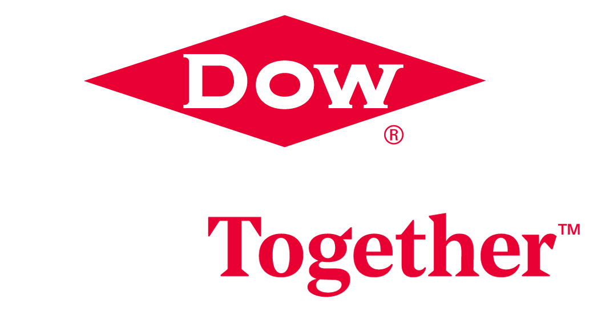

<footer>
  <section>
    <div class="footer-list-container contain">
      <div class="footer-list">
        <p>DESIGN & DEVELOP</p>
        <ul>
          <li><a href="https://brand.dow.com" target="_blank" rel='nofollow'>Dow Brand Center</a></li>
          <li><a href="https://workspaces.bsnconnect.com/sites/IsGblCloudCommCtr/Default.aspx" target="_blank" rel='nofollow'>Cloud Communication Center</a></li>
          <li><a href="https://dow-vsts.visualstudio.com/" target="_blank" rel='nofollow'>Azure DevOps</a></li>
        </ul>
      </div>

      <div class="footer-list">
        <p>SECURITY MINDSET</p>
        <ul>
          <li><a href="https://checkmarx.bsnconnect.com/CxWebClient/" target="_blank" rel='nofollow'>Codebashing</a></li>
          <li><a href="http://manage-info.intranet.dow.com/IT/Security/Policies/IT_IS_P_SS.asp" target="_blank" rel='nofollow'>Security Standards</a></li>
          <li><a href="http://manage-info.intranet.dow.com/IT/Security/Risk_Mgmt/IT_IS_RM_Profile.asp" target="_blank" rel='nofollow'>Risk Profile</a></li>
        </ul>
      </div>

      <div class="footer-list">
        <p>COMPANY GOALS</p>
        <ul>
          <li><a href="https://new.dow.com/en-us" target="_blank" rel='nofollow'>Seek Together&trade;</a></li>
          <li><a href="https://corporate.dow.com/en-us/science-and-sustainability/2025-goals" target="_blank" rel='nofollow'>2025 Sustainability</a></li>
          <li><a href="http://cioorg.intranet.dow.com/organization/O_Strategy.asp" target="_blank" rel='nofollow'>IT Strategy</a></li>
        </ul>
      </div>

      <div class="footer-list">
          <a href="http://dowhome.intranet.dow.com/seektogether/default.asp" target="_blank" rel='nofollow'>
            
          </a>
      </div>
    </div>

    <div class="footer-disclaimer">
      <p>Copyright &copy; Dow (1995-{{year}}). All Rights Reserved.</p>
      <p>&reg;&trade; Trademark of Dow or an affiliated company of Dow</p>
      <h5>Build Mode - {{buildmode | capitalize }}  | Env - {{depEnv}}</h5>
    </div>
  </section>
</footer>